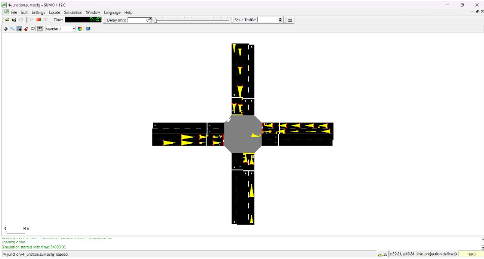

April, 2024
Fuzzy Logic Based Traffic Light Control System
The aim of the Fuzzy Logic Based Traffic Light Control System is to enhance urban traffic management by utilizing fuzzy logic to dynamically adjust traffic light timings based on real-time conditions. This approach optimizes traffic flow, reduces delays, and prioritizes emergency vehicles, significantly improving overall efficiency and responsiveness at busy intersections.
Purpose of the Project
The project was initiated to address the inefficiencies of traditional traffic light systems, which often operate on fixed schedules that do not adapt to fluctuating traffic conditions. These static systems can lead to significant congestion and delays, especially in urban environments with varying traffic volumes. The goal was to develop an adaptive traffic light control system using fuzzy logic to dynamically respond to real-time traffic data, thereby optimizing traffic flow and reducing wait times, particularly for emergency vehicles.
Objective
The project successfully developed a fuzzy logic-based traffic light controller that adjusts traffic light timings in response to real-time traffic conditions. This system improved traffic flow, reduced overall delays, and prioritized emergency vehicles at intersections. Initial tests showed marked improvements in traffic management efficiency compared to traditional fixed-cycle traffic lights.
Approach
- Data Integration and Tools:
- SciKit Fuzzy: Employed SciKit Fuzzy to implement the fuzzy logic controller, enabling nuanced decision-making based on real-time data.
- SUMO Traffic Simulation Tool: Utilized SUMO for traffic simulation to model and test the controller’s performance under various traffic scenarios.
- System Design:
- Fuzzy Logic Controller: Designed a fuzzy logic-based system to process inputs such as vehicle count and the presence of emergency vehicles. The controller dynamically adjusts traffic light phases (green, yellow, red) to optimize flow.
- Real-Time Data Processing: Integrated real-time traffic data into the system to adjust light timings based on traffic volume and queue length.
- Testing and Validation:
- Simulation Testing: Conducted simulations to evaluate the system’s performance, focusing on traffic flow improvements and wait time reductions.
- Emergency Vehicle Prioritization: Implemented algorithms to prioritize emergency vehicles, minimizing their wait times and ensuring quick response.
Project Duration
The development and implementation of the Fuzzy Logic Based Traffic Light Control System took approximately one month. This timeframe included phases of system design, integration with simulation tools, testing, and performance evaluation.
Your Role
- Project Lead/Manager: Oversaw the project’s overall direction and ensured coordination among team members.
- System Designer: Developed the fuzzy logic controller and designed the algorithms for real-time traffic data processing.
- Simulation Specialist: Utilized SUMO to model and test the traffic control system, analyzing performance under different traffic conditions.
- Data Integration: Integrated real-time traffic data into the system and fine-tuned the controller based on simulation results.
- Testing and Validation: Conducted rigorous testing to ensure the system’s effectiveness in optimizing traffic flow and prioritizing emergency vehicles.
Final Product Overview
To showcase the final product, please refer to the following materials:
- Simulation Results: 
Dec, 2023
VibeNet - The new age social media app
VibeNet is an innovative social media application designed to enhance user engagement through its intuitive interface and modern features. By leveraging Flutter for its cross-platform capabilities and Firebase for backend services, VibeNet delivers a seamless and secure social media experience.
Purpose of the Project
The purpose of developing VibeNet was to create a modern social media application that offers a highly engaging and user-friendly experience. Traditional social media platforms often suffer from clunky interfaces and outdated designs, which can hinder user interaction. VibeNet was envisioned to address these issues by leveraging Flutter for a smooth, intuitive UI and Firebase for secure, real-time backend services. The goal was to provide users with an attractive, seamless, and interactive social media platform that integrates the latest technology for superior performance and security.
Objective
The main objectives accomplished with VibeNet include:
- User-Friendly Interface: Developed a highly intuitive and visually appealing user interface using Flutter, incorporating smooth animations and transitions.
- Enhanced Security: Implemented robust security measures with Firestore security rules and Firebase Authentication to protect user data and ensure secure access.
- Real-Time Notifications: Integrated Firebase Cloud Messaging to deliver timely notifications for new messages and friend requests, enhancing user engagement.
- Cross-Platform Support: Created a cross-platform application that functions seamlessly on both Android and iOS devices.
Approach
- Design and Planning:
- Conducted market research and user surveys to identify key features and design preferences.
- Created wireframes and prototypes to map out the user interface and user experience.
- Frontend Development:
- Flutter Framework: Utilized Flutter’s widget-based architecture to build a responsive and dynamic UI.
- Animations and Transitions: Integrated Flutter’s animation APIs to enhance user interaction with smooth and engaging transitions.
- Backend Development:
- Firestore: Set up Firestore as the primary database for storing user data, posts, and interactions. Configured security rules to manage data access and validation.
- Firebase Authentication: Implemented Firebase Authentication to handle user registration, login, and account management securely.
- Firebase Cloud Messaging (FCM): Configured FCM to manage real-time notifications for messages and friend requests.
- Testing and Deployment:
- Conducted comprehensive testing to ensure functionality, performance, and security.
- Deployed the app to Google Play Store and Apple App Store, making it available for download on both platforms.
Project Duration
The development of VibeNet took approximately one month. This timeline covered all phases of the project, including initial design, development, testing, and deployment. Regular iterations and updates were performed to refine features and address any issues that arose during testing.
Your Role
- Project Lead/Manager: Coordinated the overall project, ensuring timely completion of milestones and effective communication among team members.
- Frontend Developer: Designed and implemented the user interface using Flutter, focusing on creating an engaging and responsive design.
- Backend Developer: Configured Firestore for data management, set up Firebase Authentication, and integrated Firebase Cloud Messaging for notifications.
- UI/UX Designer: Created wireframes and prototypes, and contributed to the design of the app’s interface and user experience.
- Tester: Conducted thorough testing to ensure the app's functionality, security, and performance met high standards.
Final Product Overview
To showcase the final product, please refer to the following materials:
- Simulation Results:

April, 2023
Prevention and Detection of SQL Attacks using ML
The aim of the project is to develop a robust security model using the SVM algorithm to accurately detect cyberattacks in real-time, achieving a high accuracy rate of 92.56% from a comprehensive dataset of 20,000 entries. Additionally, the project enhances database security by implementing parameterized stored procedures and filtering incorrect string literal escape characters to prevent malicious code from compromising the system.
Purpose of the Project
The project was initiated to address the growing threat of cyberattacks, which can compromise data integrity and disrupt systems. Traditional security measures often fall short in real-time attack detection and prevention. The goal was to develop a sophisticated model using Support Vector Machine (SVM) algorithms to enhance the accuracy of attack detection and to improve database security through advanced techniques to mitigate vulnerabilities.
Objective
The project successfully developed and deployed a cybersecurity model that utilizes the SVM algorithm to detect attacks with an impressive accuracy rate of 92.56% from a multi-source dataset of 20,000 entries. Additionally, the project reinforced database security by implementing parameterized stored procedures and filtering incorrect string literal escape characters in SQL statements, thereby preventing malicious code injection and improving overall data protection.
Approach
- Data Collection and Preparation:
- Dataset: Collected a comprehensive multi-source dataset comprising 20,000 entries relevant to various types of cyberattacks.
- Preprocessing: Cleaned and prepared the data for analysis, including normalization and feature extraction to improve model performance.
- Model Development:
- Algorithm Selection: Utilized the Support Vector Machine (SVM) algorithm, known for its effectiveness in classification tasks.
- Training and Validation: Trained the SVM model on the dataset, fine-tuned hyperparameters, and validated the model to ensure high accuracy and reliability in detecting attacks.
- Security Enhancements:
- Parameterized Stored Procedures: Implemented parameterized stored procedures to prevent SQL injection attacks and safeguard against malicious code execution.
- SQL Filtering: Applied techniques to filter incorrect string literal escape characters in SQL statements to further protect the database from security threats.
- Testing and Evaluation:
- Performance Metrics: Evaluated the model’s performance using accuracy metrics and tested its ability to detect and classify different types of attacks effectively.
- Security Assessment: Conducted thorough testing to ensure the implemented security measures were robust and effective in preventing unauthorized access and data breaches.
Project Duration
The development and implementation of the Cyberattack Detection System took approximately [insert duration here, e.g., 4 months]. This period covered data collection, model training, security enhancement implementation, and comprehensive testing.
Your Role
- Data Scientist/Analyst: Led the data collection, preprocessing, and model training phases, including selecting the SVM algorithm and optimizing its parameters.
- Security Specialist: Designed and implemented parameterized stored procedures and SQL filtering techniques to enhance database security.
- Project Manager: Coordinated the project activities, managed the timeline, and ensured effective collaboration among team members.
- Tester: Performed extensive testing of both the detection model and the security measures to validate their effectiveness and reliability.
Final Product Overview
To showcase the final product, please refer to the following materials:
- Security Implementation Results:

Dec, 2022
Crop Yield Prediction using Machine Learning
The primary objective of this project is to develop a predictive model that accurately forecasts crop yield in metric tons based on various influencing factors. This prediction aids farmers and agricultural planners in optimizing crop management and improving overall yield.
Purpose of the Project
The project was initiated to address the challenges faced by farmers and agricultural planners in predicting crop yields accurately. Traditional methods of estimating crop yields often rely on historical data and simplistic models that may not account for the complex interactions between location, soil type, weather conditions, and crop types. By leveraging machine learning, the goal was to develop a more precise and adaptable model that could improve decision-making in agriculture, optimize resource allocation, and enhance crop management practices.
Objective
The primary accomplishment of the project was the development of a machine learning model using the Random Forest algorithm to predict crop yields with an accuracy rate of 89%. This model outperformed traditional regression methods by 6%. Additionally, the model was integrated into a Django-based web application, providing a user-friendly interface for real-time predictions and making the tool accessible to farmers and agricultural professionals.
Approach
- Data Collection: Gathered extensive data on crop yields, including factors such as location, soil type, weather conditions, and crop types.
- Data Preprocessing: Cleaned and prepared the data for analysis, including handling missing values, normalizing features, and engineering new features to enhance model performance.
- Model Development:
- Selected the Random Forest algorithm for its robustness and accuracy.
- Trained the model using historical data, fine-tuned hyperparameters, and validated the model to ensure its reliability.
- Integration:
- Developed a Django web application to integrate the machine learning model with a user-friendly interface.
- Implemented REST APIs to facilitate communication between the frontend and backend.
- Deployment: Deployed the application for public use, enabling users to input relevant data and receive yield predictions in real-time.
- Evaluation: Assessed model performance using metrics such as accuracy, Mean Squared Error (MSE), and feature importance, ensuring that the predictions were both accurate and actionable.
Project Duration
The project took approximately 3 months to complete. This timeframe included phases of data collection, preprocessing, model development, integration, and deployment. Regular evaluations and updates were also part of the process to ensure the model’s accuracy and usability.
Your Role
- Project Lead/Manager: Oversaw the entire project lifecycle, from initial conception through to deployment.
- Data Scientist/Engineer: Designed and implemented the Random Forest model, conducted data preprocessing, and tuned model hyperparameters.
- Backend Developer: Developed the Django backend, integrated the machine learning model, and created REST APIs for frontend-backend communication.
- Frontend Developer: Designed and implemented the user interface, ensuring a seamless experience for users interacting with the prediction tool.
- Tester: Conducted rigorous testing of both the model and the web application to ensure accuracy and reliability.
Final Product Overview
To showcase the final product, please refer to the following materials:
- GitHub Repository: View Code on GitHub